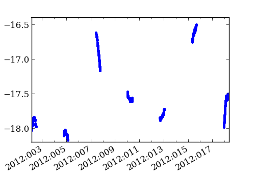
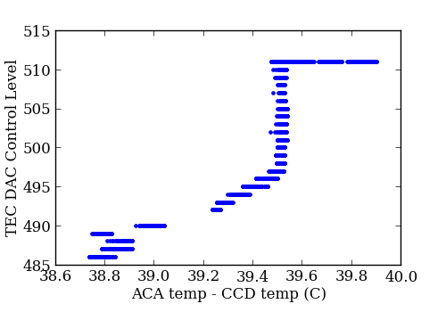

ACA diagnostic telemetry¶
The mica.archive.aca_hdr3 module works with Header 3 data
(extended ACA diagnostic telemetry) available in 8x8 ACA
L0 image data. The module provies an MSID class and MSIDset class to fetch
these data as “pseudo-MSIDs” and return masked array data structures.
See ACA HDR3 Pseudo-MSIDS for the list of available pseudo-MSIDs.
>>> from mica.archive import aca_hdr3 >>> ccd_temp = aca_hdr3.MSID('ccd_temp', '2012:001', '2012:020') >>> type(ccd_temp.vals) 'numpy.ma.core.MaskedArray' >>> from Ska.Matplotlib import plot_cxctime >>> figure(figsize=(5, 3.5)) >>> plot_cxctime(ccd_temp.times, ccd_temp.vals, '.')>>> perigee_data = aca_hdr3.MSIDset(['ccd_temp', 'aca_temp', 'dac'], ... '2012:125', '2012:155') >>> figure(figsize=(5, 3.5)) >>> plot(perigee_data['aca_temp'].vals - perigee_data['ccd_temp'].vals, ... perigee_data['dac'].vals, '.') >>> subplots_adjust(bottom=0.15) >>> ylabel('TEC DAC Control Level') >>> xlabel('ACA temp - CCD temp (C)')
Retrieving pseudo-MSIDs with this module will be slower than Ska.engarchive fetches of similar telemetry, as the aca_hdr3 module reads from each of the collection of original fits.gz files for a specified time range. Ska.engarchive, in contrast, reads from HDF5 files (per MSID) optimized for fast reads.:
In [3]: %time ccd_temp = aca_hdr3.MSID('ccd_temp', '2012:001', '2012:020')
CPU times: user 5.18 s, sys: 0.12 s, total: 5.29 s
Wall time: 7.46 s
In [9]: %time quick_ccd = Ska.engarchive.fetch.MSID('AACCCDPT', '2012:001', '2012:020')
CPU times: user 0.02 s, sys: 0.00 s, total: 0.03 s
Wall time: 0.81 s
ACA HDR3 Pseudo-MSIDS¶
| MSID | Description |
|---|---|
ac_status_word | AC status word. A status word read from the AC. The bits in the word are defined as follows: xxxx xxrr rrtt eccp X = spare bits R = CCD readout mode 1 => S/H input is grounded during pixel readout 2 => CCD reset is pulsed during column flush 4 => CCD reset/sw is pulsed during row shifts 8 => MUX is switched to ground when A/D not in use T = Test signal select (test signals not available in flight) E = Cmd error. AC cmd input buffer was overwritten C = Clock period for parallel shifts 0 => 6 microsec 1 => 12 microsec 2 => 24 microsec 3 => 48 microsec P = PromWrite? flag: true when AC EEPROM is in the write mode. |
misc_status_bits | Miscellaneous status bits showing the status of the following 16 flag variables starting with the LSB and ending with the MSB: bit 0 (LSB): AcSendTimeOut? bit 1: AcIdleTimeOut? bit 2: TecActive? bit 3: TecHeat? bit 4: DecAcTable? bit 5: AcTableCkSumOK? bit 6: StackError? bit 7: WarmBoot? bit 8: IdleCode LSB bit 9: CalMode? bit 10: CalModePending? bit 11: IuData? bit 12: IuDataPending? bit 13: DsnFixed? bit 14: InitialCalFillOK? bit 15 (MSB): IoUpdTimeout? |
ccd_molyb_therm_1 | A/D converter reading for the CCD moly base thermistor number 1 |
ccd_molyb_therm_2 | A/D converter reading for the CCD moly base thermistor number 2 |
ccd_det_therm | A/D converter reading for the CCD detector thermistor |
ad_5v_ps | A/D converter reading for the +5 volt power supply; 1 LSB=0.30518 mv |
ad_15v_ps | A/D converter reading for the +15 volt power supply; 1 LSB=0.61035 mv |
ad_m15v_ps | A/D converter reading for the -15 volt power supply; 1 LSB=0.61035 mv |
ad_27v_ps | A/D converter reading for the +27 volt power supply; 1 LSB=1.04597 mv |
ad_analog_gnd | A/D converter reading for analog ground; 1 LSB=0.30518 mv |
ad_converter_therm | A/D converter reading for the A/D converter thermistor. |
ad_smhs_therm | A/D converter reading for the secondary mirror thermistor, HRMA side |
ad_smohs_therm | A/D converter reading for the secondary mirror thermistor, Opposite from the HRMA side |
ad_pmhs_therm | A/D converter reading for the primary mirror thermistor, HRMA side |
ad_pmohs_therm | A/D converter reading for the primary mirror thermistor, opposite from the HRMA side |
ad_achhs_therm | A/D converter reading for the AC housing thermistor, HRMA side |
ad_achohs_therm | A/D converter reading for the AC housing thermistor, opposite HRMA side |
ad_lc_therm | A/D converter reading for the lens cell thermistor |
proc_stack_telem_ctr | A word containing the processor data stack pointer in the high byte, and an update counter in the low byte that increments once for every 1.025 second telemetry update. |
sci_hdr_pulse_period | The science header pulse period, as measured by the PEA; 1 LSB = 2 microseconds |
zero_off16_quad_a | A 16-bit zero offset for pixels read from CCD quadrant A; 1 LSB = 1 A/D converter count (nominally 5 electrons) |
zero_off16_quad_b | A 16-bit zero offset for pixels read from CCD quadrant B; 1 LSB = 1 A/D converter count (nominally 5 electrons) |
zero_off16_quad_c | A 16-bit zero offset for pixels read from CCD quadrant C; 1 LSB = 1 A/D converter count (nominally 5 electrons) |
zero_off16_quad_d | A 16-bit zero offset for pixels read from CCD quadrant D; 1 LSB = 1 A/D converter count (nominally 5 electrons) |
zero_off32_quad_a | A 32-bit zero offset for pixels read from CCD quadrant A; 1 LSB = 2^-16 A/D converter counts |
zero_off32_quad_b | A 32-bit zero offset for pixels read from CCD quadrant B; 1 LSB = 2^-16 A/D converter counts |
zero_off32_quad_c | A 32-bit zero offset for pixels read from CCD quadrant C; 1 LSB = 2^-16 A/D converter counts |
zero_off32_quad_d | A 32-bit zero offset for pixels read from CCD quadrant D; 1 LSB = 2^-16 A/D converter counts |
ccd_flush_dur | The time required for the most recent flush of the CCD; 1 LSB=2 microseconds |
ccd_row_shift_period | The CCD row shift clock period currently in effect; 1 LSB = 1 microsecond |
avg_bkg | An overall average background reading derived from the most recent CCD readout. This is an average from all tracked images and from all search readout segments. One LSB = 1 A/D converter count (nominally 5 electrons). |
dsn_hdr1 | Header 1 for Deep Space Network record. |
dsn_hdr2 | The record counter and Header 2 for Deep Space Network records. The record counter occupies the three high order bytes, and Header 2 occupies the low order byte. |
ccd_temp | CCD temperature. 1 LSB=0.01/(2^16) degrees C. The high order 16 bits give the CCD temperature in units of 1 LSB = 0.01 degrees C. |
ccd_setpoint | The CCD temperature control setpoint; 1 LSB=0.01 degrees C |
aca_temp | The temperature used in the angle calibration equations that convert star positions from CCD row and column coordinates to Y and Z angles for OBC telemetry; 1 LSB = 1/256 degrees C. |
last_ram_fail_addr | The address in RAM of the failure most recently detected by the RAM write-and-read test |
dac | The number most recently written to the TEC power control DAC. |